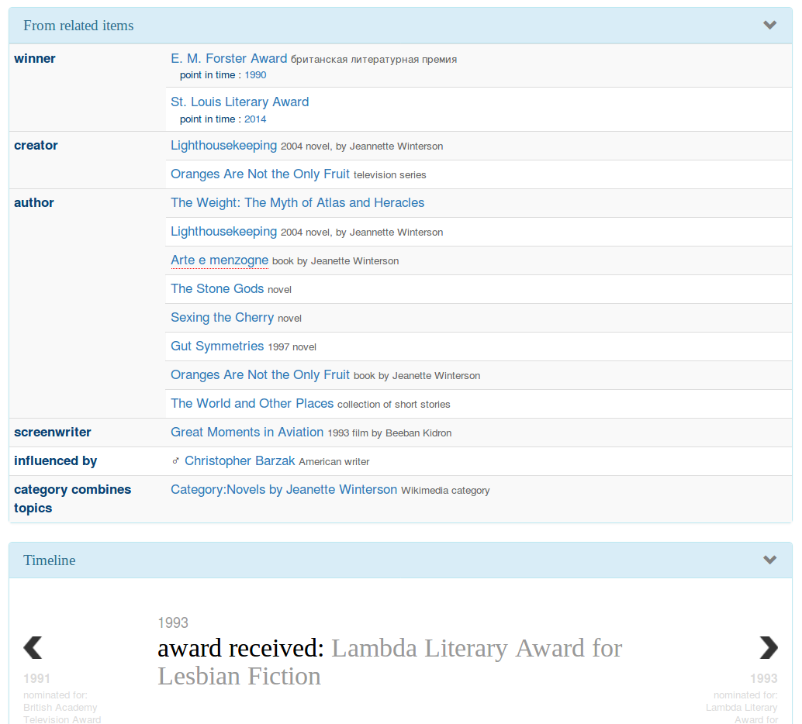

Wikidata as a Linked Data Platform
Kristina M. Spurgin
2019-03-06
What we'll cover
- Quick intro to Wikidata
- Selected GLAM Wikidata activity
- Plans at UNC Chapel Hill Libraries
What is Wikidata?
Wikidata is a free and open knowledge base that can be read and edited by both humans and machines. Wikidata acts as central storage for the structured data of its Wikimedia sister projects including Wikipedia, Wikivoyage, Wikisource, and others.
Wikidata also provides support to many other sites and services beyond just Wikimedia projects! The content of Wikidata is available under a free license, exported using standard formats, and can be interlinked to other open data sets on the linked data web. --Wikidata home page
See also: Wikidata introduction
What about Wikibase?
Wikibase is the software application under Wikidata.
| Wikipedia | <- | MediaWiki | -> | UNC Libraries Staff Wiki |
| Wikidata | <- | Wikibase | -> | (UNC Libraries Linked Data portal?) |
Linked data lightning refresher
Classic linked data concept: TRIPLES
| Subject | Predicate | Object |
| owi:297853 | rdaw:P10256 | lcsh:sh2008107935 |
| Where the wild things are | has subject | Monsters–Fiction |
The Wikidata version: STATEMENTS or CLAIMS
| Item | Property | Value |
| Q13912 | P921 | Q276453 |
| Where the wild things are | main subject | monster |
Items and Labels
Items are the things/concepts described.
Anyone can create an item.

Multilingual
- Because I have my primary language set as English I see that as main label.
- Because I have French set as another lanuguage, I see that in my interface.
Very multilingual!

Description

Use of description

Alias
Use of alias
Statements
All of the following are statements:
- Main statements
- Identifiers
- Sitelinks
Look at item: Jeanette Winterson (Q233584)
- references of different types (look under date of birth)
- qualifiers (look under award received)
Identifiers+ – VIAF links back!

Properties
Properties describe the relationships between items.
New properties must go through a proposal process. (See all open proposals)
Look at property: author (P50)
Query Service (SPARQL)
Example: Instance of work (or any of its subclasses) where author is Jeanette Winterson
Check out the examples and the help!
The ecosystem: Reasonator
Nicer views of Wikidata
Reasonator view for Jeanette Winterson

The ecosystem: Reasonator
Reasonator view for Jeanette Winterson

The ecosystem: Wikidata Graph Builder
Visual way to explore relationships/ontology in Wikidata
Class hierarchy for "book" (Q571)

The ecosystem: SQID
SQID Item Browser entry for "book" (Q571)
SQID Property Browser – look at properties used for class "book (Q571)"
Get started: The Distributed Game
Easy ways to start editing Wikidata
- Missing birthdate
- Depiction
- Items without descriptions
- many more!
Get started: Mix'n'match
Hundreds of vocabularies being reconciled with Wikidata
Interface to:
- verify automatic matches
- simplify process of creating new matches
Example: JSTOR topics vocabulary
Selected others of interest:
The big time: Wikidata at scale
GLAM and Wikidata? – General
- Allison-Cassin, Stacy and Scott, Dan. (May 2018) Wikidata: a platform for your library’s linked open data. Code4Lib Journal, Issue 40.
- ARL draft white paper on Wikimedia and Linked Open Data open for comment in Fall 2018. (about | draft)
- Wikidata + GLAM Facebook group
- Wikimedia and Libraries User Group
Projects
Wikidata projects working out data models, best practices, data enrichment in certain areas, including:
- WikiCite
- Books
- Libraries
- Archival description
- Indexes
- Cultural heritage
- Events (including conferences… citation implications!)
Applications
- Scholia - interface to the scholarly bibliographic data in Wikidata
- University of Wisconsin-Madison Libraries catalog integration - "Information from the Web" section added to end of record view
- Laurentian University Library catalog integration
GLAM Wikibase
- OCLC's Project Passage (overview)
- Europeana's EAGLE Project
- Rhizome plans to migrate its ArtBase
At UNC Chapel Hill Libraries
On the table:
- model the Libraries in Wikidata
- addition of archives at (P485) property to Wikidata items for people and organizations whose papers or correspondence we hold
Other ideas:
- create items for unique archival collections
- representing our faculty and publications in Wikidata (?)
- edit-a-thons to reconcile vocabularies we care about
- experiment with leveraging Wikidata in our systems
- NC Metadata Connect name authority project (possible use of Wikibase)
Resources
This presentation heavily cribbed from:
- Wikidata in one page
- ARL draft white paper on Wikidata in Libraries